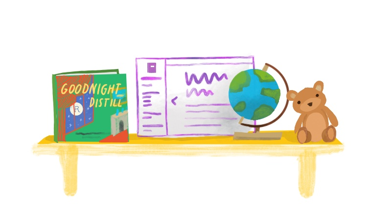

Section 1 What is Statistical Learning?

There are 2 types of statistical learning: supervised and unsupervised:
Supervised learning is when you have a label for each data point, which mean it involves building a model that can predict an output based on one or more inputs.
Unsupervised learning is when you don’t have a label for each data point, where there are inputs but no supervising output.
In statistical learning, input variables \((X_{n})\) are typically denoted by features, predictors, independent variables or variables while output variable \((Y)\) often called dependent variable or response.
To assess the relationship between predictors \(X_{1}, X_{2}, ...,X_{p}\), we have the equation as following:
\[ \Large Y=f(X) + \epsilon \]
Whereas:
- \(f\) is fixed but unknown function of \(X_{1},...,X_{p}\) and \(\epsilon\) is a random error term, which is independent of \(X\) and has mean zero.
In essence, statistical learning refers to a set of approaches for estimating \(f\).
1.1 Why Estimate f?
There are 2 main reasons: prediction and inference.
1.1.1 Prediction
Hypothetically, let’s say we have the error term averages to 0, predicting \(Y\) can be assessed using this equation:
\[ \Large \hat{Y} = \hat{f}(X) \]
Whereas:
\(\hat{f}\) represents the estimate for \(f\)
\(\hat{Y}\) represents the resulting prediction for \(Y\)
The accuracy of \(\hat{Y}\) as a prediction for \(Y\) depends on 2 quantities: reducible error and irreducible error.
reducible error: Reducible error is the error arising from the mismatch between \(\hat{f}\) and \(f\). Can be improved by choosing a better model. Usually caused by Variance Error/Bias Error.
irreducible error: Errors which can’t be removed no matter what algorithm you apply. These errors are caused by unknown variables that are affecting the independent/output variable but are not one of the dependent/input variable while designing the model.
1.1.1.1 Inference
Necessary questions need to be asked in order to further understand the relationship between predictors \((X_{n})\) and outcome \((Y)\):
Which predictors are associated with response? Only a small fraction of the available predictors are associated with the response.
What is the relationship between predictors and response? The relationship between predictors and response is not always linear.
Can the relationship between predictors and response be explained by the linear model or it is more complicated? The model can explain the relationship between predictors and response if the model is able to predict the response based on the predictors.
1.2 How Do We Estimate f?
In order to estimate \(f\), our goal is to apply a statistical learning method to the training data. Broadly speaking, most statistical learning methods for this task can be characterized as either parametric or non-parametric.
1.2.1 Parametric Methods
Parametric methods (model-based approach) are those that are able to estimate the parameters of the model based on the training data. It involves a two-step model-based approach:
First, we make an assumption about the functional form, or shape, of \(f\). In other words, we need to choose the model that best fits the data.
After the model has been selected, we need a procedure that uses the training data to fit or train the model.
Potential disadvantages of parametric methods is that the model will not usually match the true \(f\). This can be avoid by choosing a more flexible models that can fit many possible functions for \(f\) forms and usually require greater number of parameters.
Example fitting models for parametric methods (linear): Ordinary Least Squares (OLS), Lasso.
1.2.2 Non-Parametric Methods
Non-parametric methods (model-free approach) seek an estimate of \(f\) without make explicit assumptions about the functional form of of \(f\). Major disadvantages of this approach is that a very large number of observations is required in order to obtain an accurate estimate for \(f\).
Example fitting models for non-parametric methods: smooth thin-plate spline fit and rough thin-plate spline fit.
1.3 The Tradeoff Between Prediction Accuracy and Model Interpretability
Figure 1.1: Tradeoff Between Prediction Accuracy and Model Interpretability
Why would we ever choose to use a more restrictive method instead of a very flexible approach?
If we are mainly interested in the interpretability of the model, we would rather use a more flexible model. This is because the flexibility of the model is usually better than the interpretability of the model.
In contrast, if we are interested in the prediction accuracy of the model, we would rather use a more restrictive model. This is because the flexibility of the model is usually better than the prediction accuracy of the model.
1.4 Supervised Vs. Unsupervised Learning
Most statistical learning problems involve both supervised and unsupervised learning.
In supervised learning, we wish to fit a model to the training data and predict the response variable based on the predictors, with the aim of accurately predicting the response variable or better understanding the relationship between predictors and response variable.
Some of the statistical approaches that apply the supervised learning method are:
Linear Regression
Logistic Regression
Boosting & Support Vector Machine
Generalized Additive Models (GAMs)
In contrast, unsupervised learning methods are those that do not require any training data. One statistical learning tool that we may use in this setting is cluster analysis or clustering. The goal of this method is to ascertain, whether observations fall into distinct groups.
1.5 Regression Vs. Classification
Variables can be characterized as either quantitative or qualitative.
Quantitative variables are those that can be measured in terms of a number.
Qualitative variables are those that can be measured in terms of a set of categories.
We tend to refer to problems with a quantitative response variable as regression problems and problems with a qualitative response variable as classification problems. However, an important note is that it does not matter much whether the predictors/variables are quantitative or qualitative.